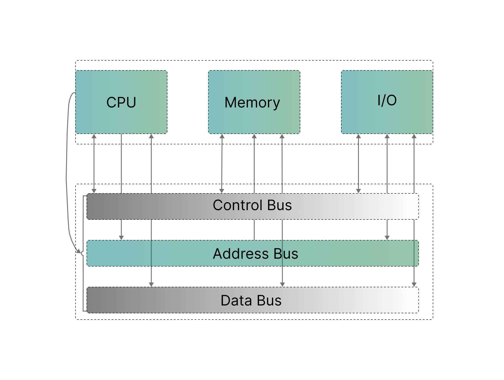
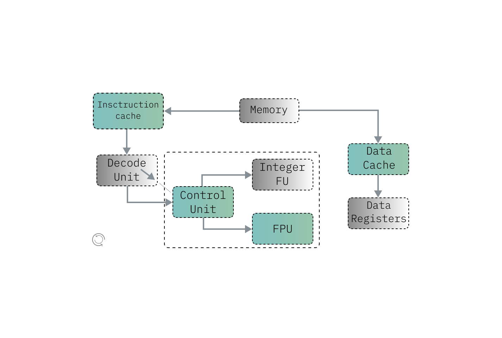
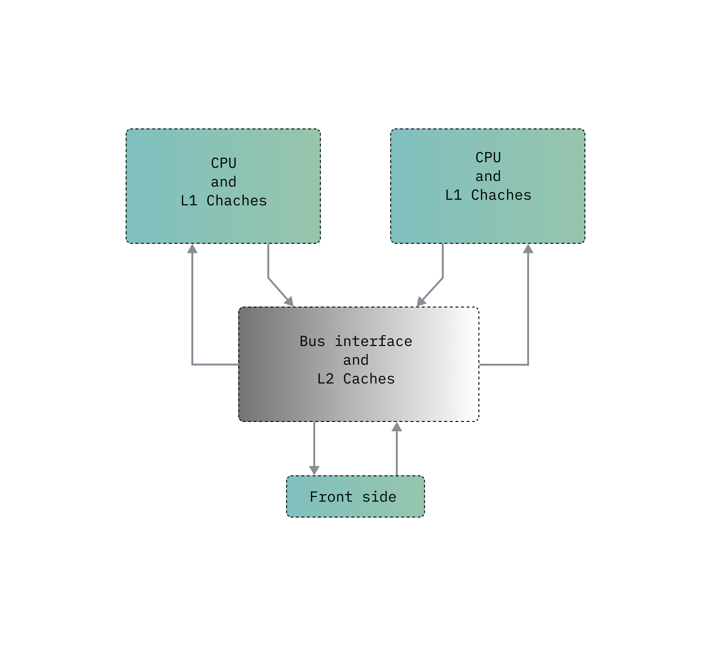
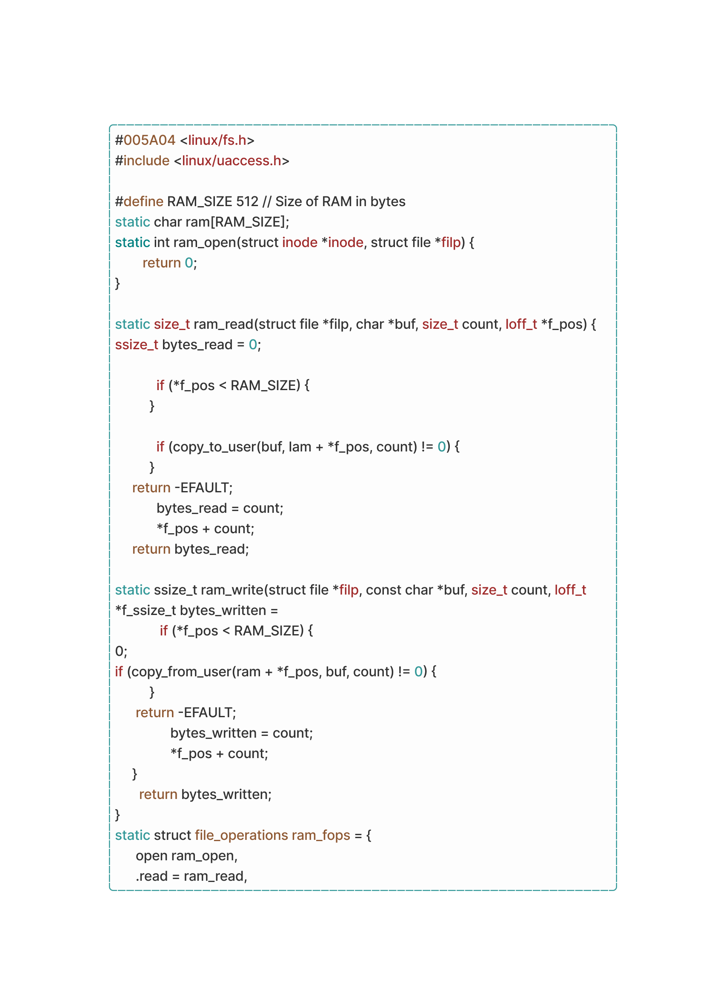
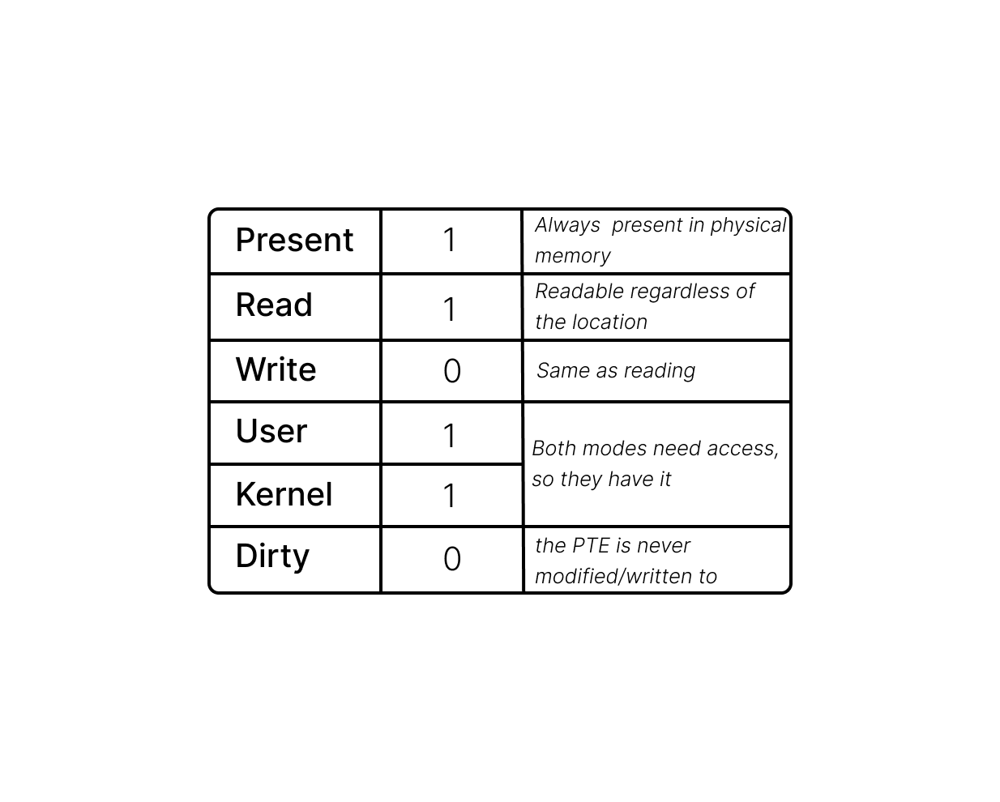
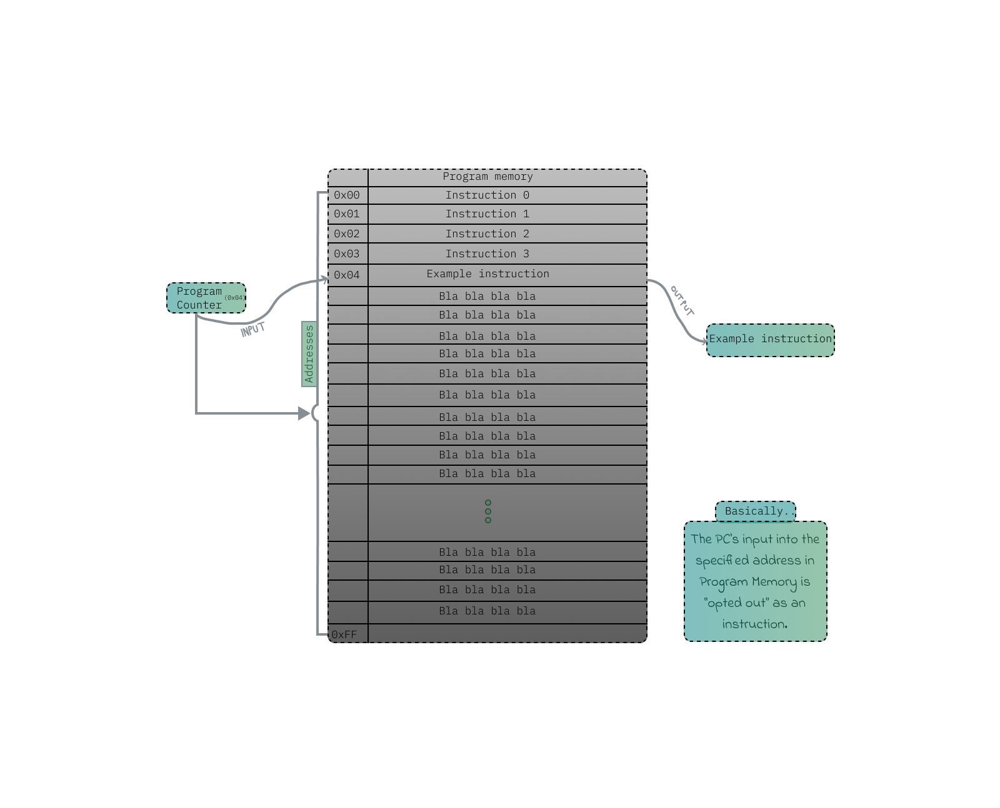
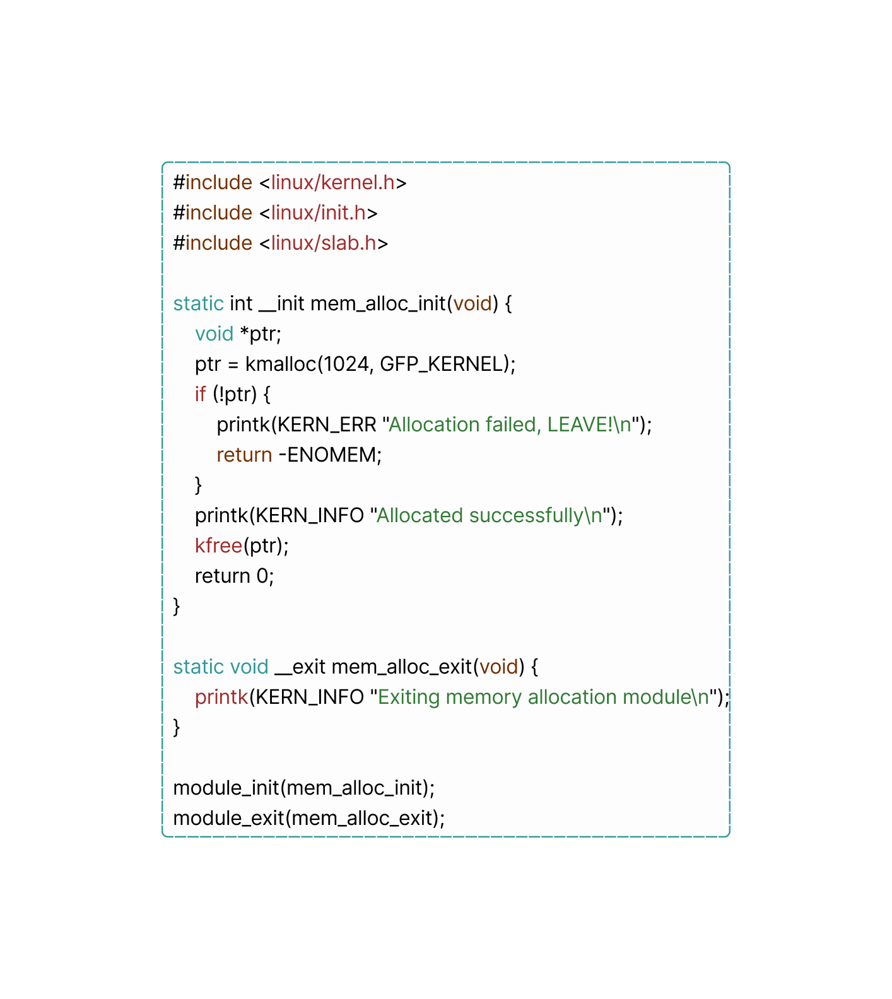
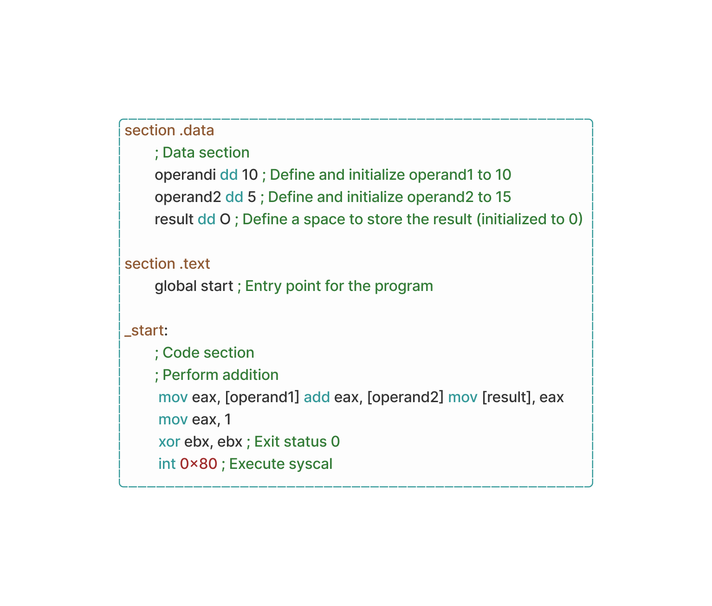
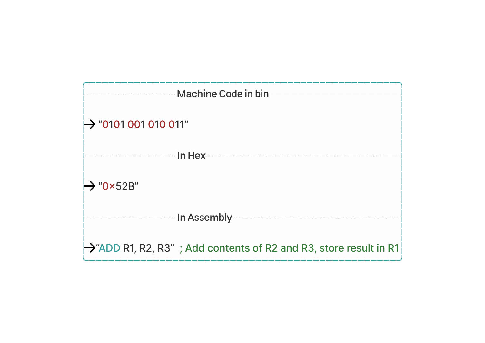

cyber rift
You see, memory is treated like a queen in computers. How so? Something known as “memory bus” exists, and it makes the CPU eligible for communicating with RAM through the Motherboard’s PCB channels for transferring data and memory control signals.
The memory bus acts as a bridge allowing the CPU to access and manipulate stored data in RAM which is needed to properly execute programs and instructions.

Before that, how do you think your computer processes instructions so fast? Do they run on cheese?
For the cheese part, it depends. Well, they kind of have a highway designed specifically for instructions to travel through, referred to as the ‘instruction pipeline’.
So in a pipelined computer, tasks are divided into stages as instructions move through the CPU. Each stage handles a specific job, like fetching instructions, fetching data, performing calculations, and storing results. To make this process even faster, there are pipeline registers after each stage. At any given moment, an instruction is only in one stage of the pipeline. When instruction pipelines are designed well, most of their logic is active most of the time. Von Neumann watching us in his tomb.
Pipelined processors typically employ three methods to assure correct functioning when the programmer assumes that each instruction finishes before the next one starts, though it might cause a kernel panic if one instruction didn't pass, waiting for necessary values before scheduling new instructions. This creates empty slots, or ‘bubbles’, where no work happens.
Another path can be added to send a computed value to a future instruction in the pipeline before the -currently- producing instruction finishes. This process is called operand forwarding.
The processor then can find and execute other instructions that don't depend on the current ones without risk. This is called out-of-order execution and helps optimize performance. The whole design looks something like this:

You reached the end.. no, wait! while we’re still in the context of pipelines; let me introduce you to FPUs, because they’re FPU-linked at some point. -this was intentionally unfunny-
Floating-Point Units or FPUs are the names of physical hardware components inside the CPU. They have their own exclusive design meant for handling floating-point arithmetic operations - those operations that deal with numbers expressed in scientific notation or numbers that carry a fractional part.
These FPUs are made to precisely carry out these complex mathematical computations. And once again, Function is key. FPUs are used to execute floating point arithmetic operations accurately during high speed time frames; they carry out this specific task, also the subtraction, multiplication and division of floating point numbers, which are often more complex than standard integer operations done by the 'ALU'.
They also feature support for more mathematical functions like trigonometric or exponential ones that would allow scientific calculations otherwise, impossible on a processor without them.
They work separately from the main part responsible for general calculations. This means they have their own cache registers, sets of instructions, and even out of the book methods to perform program executions. The reason behind this is that.. They deal specifically with numbers containing decimal points using specific algorithms designed for them; These algorithms are there to ensure that all operations involving such numbers are done fast without delay and in large quantities at once.
FPUs are found everywhere in applications demanding spot-on high precision float-point math applications make heavy use of FPUs where exact math is important; scientific simulation programs, engineering computations, real-time systems.. You get my point.
Let’s do a quick reality check - FPUs deliver superior precision along with performance when contrasted against software-based floating point arithmetic implementations. They have come a long way to support more complex computations, a necessary part of today’s CPU architecture. Despite being highly specialized components that most software applications see through a glass darkly, they present themselves as transparent entities. This means that programmers can make use of their capabilities without swimming under the turkish waters of low-level implementation(s).
Now that you know about it, FSB is a term that refers to the primary communication channel between the CPU and other parts, including RAM, on the motherboard. In older systems you can find two of these, one being the North bridge and located in the left CPU side, the other one is (more like was) South Bridge located just under the PCI-e x-YY port.

It’s a literal highway within your computer serving as the main ‘conduit’ for data transfer between the CPU and various components on the motherboard, modern system buses are typically based on point to point interconnects allowing for data to go from point A to B in a snap of (17?) nanoseconds!
AND.. This might give you a better idea on how memory size is defined to the driver(s) through a memory bus:

Time for some Kernel!!
First, We’ll be taking a look at the Linux Kernel when it’s on Kernel-Level and User-Space memory access.
Userland processes must not be allowed to read or write kernel memory for security reasons. Something called paging provides an additional layer of security by enforcing permission flags on each memory page.
One flag determines if a memory region is writable or only readable. Another flag specifies that only kernel mode can access the memory region. This latter flag protects the entire higher half kernel space. While the entire kernel memory space is locked (more like mapped) into the virtual memory layout accessible to user space programs, they simply lack the permissions to access it.
The page table itself is within the kernel memory space. When the timer chip triggers a hardware interrupt for process switching, the CPU elevates its privilege level to kernel mode and transitions to Linux kernel code execution. Operating in kernel mode (Ring 0 for Intel?) grants the CPU access to the kernel-protected memory region, allowing modification of the page table, which is situated in the upper half of memory.
Each entry in the page table, known as a Page Table Entry (PTE), contains metadata defining the attributes and mappings for a specific memory page. These attributes include information about the page's physical address, permissions (read, write, or execute), and whether the page is present in physical memory or reserved/swapped out to disk.

As soon as the kernel switches over to the new process and the CPU transitions into user mode, access to the kernel memory is lost. These Page Table Entries (PTEs) are then utilized by the kernel to remap the lower half of the virtual memory, a region identified by the program counter, for the new process. By then, the CPU loses access to any of the kernel memory regions.
The kernel and CPU can only process one thing at a time. It's like they're taking turns to handle tasks efficiently. (it's true)
So, When your computer accesses memory, it doesn't directly talk to the physical RAM. Instead, it communicates with virtual memory space, managed by what's called a page table. This system, known as paging, translates every memory access. Each entry in the page table, called a page, represents how a chunk of virtual memory links to RAM. These chunks are fixed in size, with x86-64 using a default page size of 4 KiB, mapping memory blocks 4,096 bytes long.
At startup, memory accesses hit physical RAM first. Soon after, the OS sets up the translation dictionary and signals the CPU to engage the MMU. x86-64 offers larger page sizes of 2 MiB or 4 GiB, enhancing address translation speed at the cost of memory fragmentation and waste. Larger chunks require more bits for indexing, leading to unchanged bits before and after translation.
What's interesting is that the page table can be adjusted at runtime. This allows each process to have its own memory space. When the OS switches between processes, it reassigns the virtual memory space to a new physical area. For example, process A and process B might both access their code and data from the same address, like '0x0000000000400000'. In that case, they aren't competing for this space. The kernel maps their data differently in physical memory when switching between them.
| Clarification: How come the kernel doesn't get stuck in just one instruction if it can only do one thing at a time? And how does it manage to handle lots of different tasks at once without getting jammed up?
You said your computer got jammed up? We discussed before how software interrupts help switch control from a regular program to the operating system. Imagine you're making an operating system, but your CPU can only handle one task at a time. To let users run multiple programs simultaneously, you switch between them quickly. This way, each program gets a turn without hogging the CPU. But how so?
Well, many computers have timer chips. Consider that, By programming these chips, you can make them trigger a switch to an OS interrupt handler after a set time. Other than that, we got the good old ‘program counter’ method, which is yet another CPU register. This register tells the CPU where it currently stands within the sequence of instructions of a program, commanding which instruction to execute next in the program's sequence.

i know i know... this will raise a lot of questions in your microcontroller.
So, The program counter operates by being incremented (summoned) each time an instruction is fetched from memory. This ensures that it always points to the address of the next instruction in memory. After fetching an instruction, It is updated to reflect the address of the next instruction. This process allows the CPU to quickly progress through the program, executing instruction after instruction after instruction in a sequential manner, until the sun explodes.
But- can the program counter move backward? Technically yes but no, it usually advances forward as instructions are executed in sequence. But certain instructions like loops or jumps can make it go backward (more like, virtually holding its position without stoping) or to different memory locations, allowing for non-sequential execution. As for starting from the beginning of a program, the initial value of the program counter depends on the computer's architecture. Typically, it starts at the memory address where the program begins. Yet, exceptions exist, such as interrupt handlers or OS routines, where the program counter might be set to different addresses. Let's see what the kernel provides to programs regarding memory access on different levels:
In Kernel Level memory level of access, the operating system reserves a protected area of memory called kernel space. Allows for managing hardware devices and handling system calls, operating with unrestricted access to hardware stuff. When a user-level program requires privileged operations, it makes a system call. The kernel, in turn, provides system calls and interfaces for user-space programs to perform tasks like memory allocation, reading, and writing under the privilege of virtual memory management. This system translates between virtual and physical memory addresses and it is done by the PTE after pointing to the start of the X-KiB block in RAM (usually 4bits), the MMU then adds the remaining bits 0-X to that address to get the final physical address.
Let's take a look at a code snippet demonstrating simple Linux kernel modules that allocates and deallocates memory in kernel space using the ‘kmalloc()’ and ‘kfree()’ functions:

So, what you just read is basically the ‘malloc()’ and ‘free()’ functions with the addition of ‘K’ which stands for kernel allowing them to be used within the kernel space. What it does isn’t anything new but still worth bringing up, It initializes a kernel module that allocates 1024 bytes of memory using the first function from the Linux kernel's memory allocation subsystem. If the allocation fails, an error message is printed to the kernel log. If allocation is successful, the memory is freed using a second function before the module exits.
• User Space memory access: Is able to give programs access to memory through standard language constructs (like pointers in C/C++) or language specific memory management functions and most commonly system libraries such as libc (again, for Linux).
Just to be clear, OpCode is abbreviated from Operation Code. Ignore the Topic name - when the data is dancing back and forth between the CPU and RAM, OpCodes will come in handy as they serve the role of instructions directed by the CPU representing the great machine language understood by the CPU. Each OpCode corresponds to a specific action the CPU can perform such as data transfers or even arithmetic operations. IT'S EVERYWHERE!
This is a demonstration showing the 'ADD' OpCode:

looking at the data section, ‘operand1’, ‘operand2’, and ‘result’. These are 32-Bit signed integer variables (‘dd’ directive).
In the code section, we load the value of ‘operand’ into the EAX register using the ‘mov’ instruction.
After, the value of ‘operand2’ was added to the value in the EAX register using the ‘add’ instruction. And finally the result was stored back into the ‘result’ variable in memory, then the program exited using the ‘exit’ syscall with a status of 0 – (0 indicates a successful execution).
| Clarification: What in the world is a syscall?
Programs operate in user-mode for security reasons, limiting their access to system resources. While user mode provides primary protections, programs still need to perform tasks like I/O operations and memory allocation.
To do this, they rely on the operating system kernel for assistance. Common functions like ‘open’, ‘read’, ‘fork’, and ‘exit’ act as bridges between user mode and the kernel, triggering syscalls giving these interactions. These specific system calls allow programs to transition from user space to kernel space, accessing OS services securely.
Well.. what exactly are OpCodes used for? They actually have other common purposes other than serving as the bridge to heaven coordinating between the CPU and RAM. Per say, directing traffic while a program is executing a sequence of instructions, OpCodes come and stop it to dictate the specific actions the CPU must perform, like fetching, storing, or executing operations on stored data - Honestly, they deserve the security badge at some point.
Time to revisit the CPU fetch, execute cycle but focus more on OpCodes.
Fetching: As you know, when the CPU executes a program, it begins fetching instructions from RAM. The instruction pointer (or, IP) points to the memory address of the next instruction to be executed, The CPU uses this address to retrieve the OpCode associated with the corresponding instruction from RAM.
The reason for that is it acts as the instruction instead of the instruction itself, like.. OpCodes act like instructions more than the instructions do themselves!! (i just wanted to fit that "joke" in there).
Decoding: Upon fetching from RAM, the CPU’s Control Unit decodes the OpCode to determine the nature of the operation to be performed. This ‘decoding’ process involves interpreting the OpCode and identifying the specific instruction it represents.
But how does the CPU interpret instructions from RAM into a language it can comprehend?
First, instructions fetched from RAM are encoded in machine language consisting of just raw binary patterns representing specific operations or commands. These instructions are typically composed of an OpCode, which does exactly what’s explained above – so then the CPU can identify OpCodes from RAM within the fetched instruction. At the time of identifying, The OpCode is located in a predefined position within the instruction’s binary representation.
Who does the ‘decode’ process? definitely not the CPU. Here comes the Control Unit (CU). It’s responsible for analyzing this portion of the instruction to determine the corresponding operation given by the CPU.
Machine Code is fun!! Everyone should learn it and call it a day!!
Follow up note:
Imagine the CPU as not just one big thing, but more like a bunch of many parts, each with its own job. One of them happens to be the Control Unit, guiding and directing the flow of instructions through the CPU. The Control Unit then takes instructions from the memory and sends them along the stages of a pathway called the instruction pipeline. With each stage handling a different part of the instruction. The instruction is fetched from memory and brought into the CPU. Then, the CU decodes the instruction, figuring out what it's asking the CPU to do.
After that, the CPU executes the instruction, carrying out the desired operation, whether it's adding two numbers together or moving data from one place to another. The CU also manages other tasks, like handling interrupts and coordinating with other parts of the system, like memory and I/O devices.
| Clarification: what does “ce quoi” mean?
It means “what is”.
| Follow-up Clarification: Ce quoi “Machine Code”?
It’s the world view of what the CPU sees and it’s the lowest level programming language known to mankind (typically a roadman language) understood directly by the CPU. It consists of binary instructions that represent specific operations (again). But don’t worry yet, if you’re new to coding, we use higher level languages such as C, Java… which are then compiled/interpreted into machine code for the hardware to comprehend. On a side note, can we understand machine code ‘content’? Yesn’t. Because Assembly language saved the day! It serves as an interpreter between human-readable code and machine-executable code/binary while providing accessible syntax for programmers to write and understand instructions compared to raw binary data; on all means, it’s always compiled into binary that your computer can understand, here’s an example:

The original machine code represents the instruction ‘ADD R1, R2, R3’.
‘001’, ‘010’, and ‘011’ are binary representations of register operands ‘R1', ‘R2’, and ‘R3’.
Converting the binary machine code to hexadecimal translates to ‘52B’.
‘0101’ in binary is ‘5’ in hex, ‘0010’ is ‘2’, and ‘1011’ is ‘B’.
‘ADD R1, R2, R3’ represents the operation of adding the contents of registers ‘R2’ and ‘R3’ and storing the result in register ‘R1’ back to RAM.
Empty space for no reason, literally